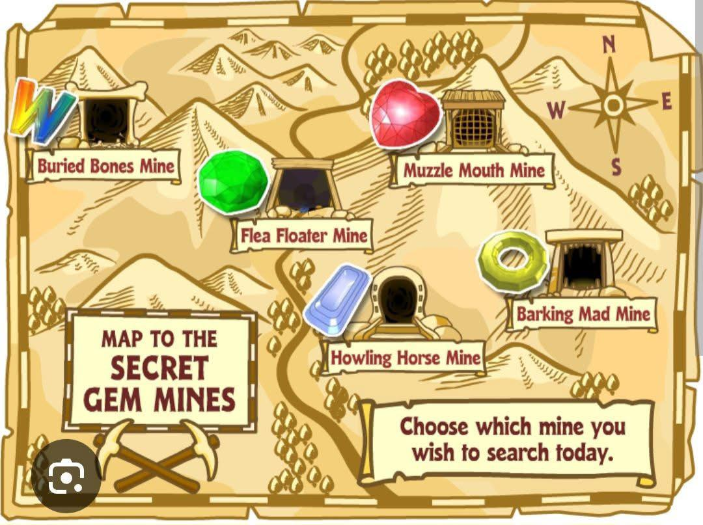

The Mines
In Webkinz, the Buried Bones Mine is one of the five distinct mining areas accessible via Arte Fact's Curio Shop. It is most famous for being the only location where you can find the Webkinz Diamond, the rarest and most valuable white gem in the game. Gems Available in the Buried Bones Mine While the mine primarily features white rocks and white gems, it also contains a rotating roster of specific uncommon and common gems from other color families: • White Gems (All): Webkinz Diamond (Rare), Coasglowing Glint, Booger Nugget (Uncommon), Goober Glitter (Uncommon), Zingoz Zincoz (Common), and Isicle Chunk. • Yellow Gems: Aurora Rox (Uncommon) and Pyramid Plunder (Uncommon). • Green Gems: Jaded Envy (Common), Pearl Egg (Common), and Terra Tectonic (Common). • Blue Gems: Aqua Orb (Common), River Ripple (Common), and Rainbow Flower (Common). • Red Gems: None (Red gems cannot be found here).
Gems Available in Muzzle Mouth Mine While you will occasionally find common gems of other colors, the mine is strictly mapped to host the following specific red stones: • Red Ruby Heart (Ultra-Rare — Exclusive to this mine) • River Rinestone (Rare) • Lava Lump (Uncommon) • Ember Amber (Common) • Flare Fyrite (Common) Quick Tips for Muzzle Mouth • The Sparkle Trick: When choosing which rocks to hit, look closely for faint white sparkles or glints reflecting off the rock faces. These rocks have a higher probability of containing a gem rather than slag. • Artifacts: Aside from gems, digging in Muzzle Mouth Mine can occasionally unearth unique Curio Shop decoration items or ancient bones.
The Barking Mad Mine is the primary destination for finding Yellow Gems in the Webkinz Curio Shop Gem Hunt. It is the single most important mine to visit if you are looking for the ultra-rare Corona Topaz, which cannot be found anywhere else in Kinzville. Gems Available in Barking Mad Mine While you can occasionally strike a random common gem from other color families, your pickaxe attempts here are heavily weighted toward the yellow tier: • Corona Topaz (Ultra-Rare — Exclusive to this mine) • Starlight Shimmer (Rare) • Aura Amber (Uncommon) • Sun Amber (Common) • Citrine Zap (Common)
The Flea Floater Mine is the primary destination for finding Green Gems in the Webkinz Curio Shop Gem Hunt. It is the only place in the game where you can unearth the ultra-rare Earth Emerald, which you must collect to forge your Crown of Wonder. Gems Available in Flea Floater Mine While random common gems from other colors can occasionally appear, your mining attempts here are heavily focused on the green tier: • Earth Emerald (Ultra-Rare — Exclusive to this mine) • Green Glider (Rare) • Cat's Eye Chrysoberyl (Uncommon) • Jester Jade (Common) • Moss Marble (Common)
The Howling Horse Mine is the primary destination for finding Blue Gems in the Webkinz Curio Shop Gem Hunt. It is the only place in Kinzville where you can unearth the ultra-rare Ocean Sapphire, a critical piece needed to complete the Crown of Wonder. Gems Available in Howling Horse Mine While you can occasionally strike a random common gem from other color families, your pickaxe attempts here are heavily weighted toward the blue tier: • Ocean Sapphire (Ultra-Rare — Exclusive to this mine) • Aura Borealis (Rare) • Blueberry Chunk (Uncommon) • Lapis Lazuli (Common) • Water Droplet (Common)
Quick mining tips for all mines
Quick Mining Strategy • The Sparkle Trick: Watch the rock formations carefully before swinging your pickaxe. Rocks that flash a subtle, periodic white glint carry a much higher chance of containing a real gemstone instead of worthless slag. • Arte's Daily Rates: If you find duplicate blue gems, check what Arte Fact is willing to pay for them. Rare gems like the Aura Borealis can occasionally fetch a high KinzCash buyout if you sell them on the right day.